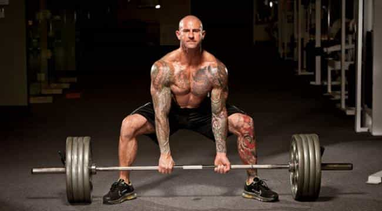
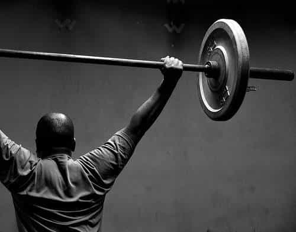

David is a strength coach and bestselling Men's Health author. You can follow him at HowToBeast.com.


When you step in the gym, what’s the first thing on your mind? How crowded it is? That chick with the big booty on the stair master? Your job? The fact is that most guys bring a whole shit ton of mental baggage with them to the gym. And that violates the exact purpose the gym should serve to a man.
The gym isn’t a place to show off. It isn’t a place to let your insecurities consume you. It’s not a place to pick up girls either. No, it’s a place to turn off your mind and put your body to the test. It’s been dubbed “the iron temple” by some, and that’s quite the fitting name. When you walk into the realm of the iron temple, there should be only one thing on your mind: can you do better than your previous best? Have you grown stronger?
Here’s why:

Arnold Schwarzenegger said it best: “The resistance that you fight physically in the gym and the resistance that you fight in life can only build a strong character.” When you step under the bar for a set of heavy squats that takes you to your physical limits, you have to put it all on the line. It’s not comfortable. It’s not easy.
I don’t know of another activity where your progress can be so accurately measured. Growing stronger in the gym embodies the same cycle of development and improvement that you’ll face across all areas of your life. By training yourself to always push past your previous best in the gym, you ingrain this notion as a habit in your consciousness.
If you acknowledge this fact and begin to view the gym as a place to test your wit and push your limits, your newfound desire to improve will surface across all areas of your life. The same way you’ll grow a burning desire to hit the gym again and see if you can complete an extra rep on the bench, you’ll also begin to bring this same mentality to your other pursuits, be it attracting women, building a business, or otherwise.

The second reason you must always strive to get stronger is more tangible: getting stronger guarantees a bigger, leaner physique. If you’re gaining weight and getting stronger, this is a sign that your body is synthesizing new muscle tissue. Your strength increase is a direct result of additional muscle mass on your body.
If you’re losing weight and getting stronger (or at least maintaining your strength), this is a sign that your body is shedding fat and holding onto the muscle. When you lose weight and don’t focus on getting stronger, you’ll undoubtedly get weaker.
This is a result of the fact that you’re consuming less energy than your body needs to maintain its current weight. In this state it can either use muscle or fat as a source of energy. If you don’t lift and focus on getting stronger, your body won’t have a reason to discriminate between the two. As a result it will burn both fat and muscle. This is the reason it’s common to see a friend drop 20 pounds yet still look the same. Yes he lost 20 pounds, but because it consisted of both muscle and fat, his body fat level either stayed the same, or barely dropped. He’s gone from fat to skinny fat.
So there you have it: you must get stronger in order to build a better body, and also to foster a mindset of personal growth.
For an addictive, customizable approach to training and nutrition, check out my new book “Shredded Beast”. Click here to read reviews and get it now.
Read More: The Biggest Mistake A Man Can Make